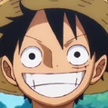
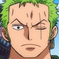
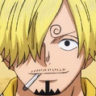
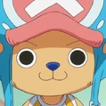
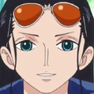
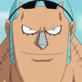
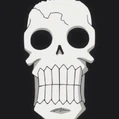

Capitão dos Mugiwaras. Comeu a Gomu Gomu no Mi, tornando-se um homem-borracha. Sonha em ser o Rei dos Piratas.

Espadachim e primeiro membro. Usa o estilo de três espadas e sonha em ser o maior espadachim do mundo.

Cozinheiro e estrategista. Sonha em encontrar o All Blue, o lendário mar com todos os peixes do mundo.

Médico e rena que comeu a Hito Hito no Mi. Sonha em curar todas as doenças do mundo.

Arqueóloga. Comeu a Hana Hana no Mi e busca desvendar os segredos do Século Perdido.

Carpinteiro e ciborgue. Sonha em construir o navio dos sonhos que chegará ao fim do mundo.

Músico e esqueleto vivo pela Yomi Yomi no Mi. Sonha em reencontrar Laboon, sua baleia amiga.